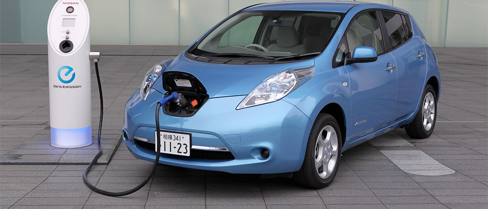

Air pollution refers to the release of pollutants into the air that are detrimental to human health and the planet as a whole. The Clean Air Act authorizes the U.S. Click here for further understanding.
Environmental Protection Agency (EPA) to protect public health by regulating the emissions of these harmful air pollutants. The NRDC has been a leading authority on this law since it was established in 1970.
“Most air pollution comes from energy use and production,” says John Walke, director of the Clean Air Project, part of the Climate and Clean Air program at NRDC.
“Burning fossil fuels releases gases and chemicals into the air.” And in an especially destructive feedback loop, air pollution not only contributes to climate change but is also exacerbated by it. “Air pollution in the form of carbon dioxide and methane raises the earth’s temperature,” Walke says. “Another type of air pollution is then worsened by that increased heat: Smog forms when the weather is warmer and there’s more ultraviolet radiation.” Climate change also increases the production of allergenic air pollutants including mold (thanks to damp conditions caused by extreme weather and increased flooding) and pollen (due to a longer pollen season and more pollen production).
“While we’ve made progress over the last 40-plus years improving air quality in the U.S. thanks to the Clean Air Act, climate change will make it harder in the future to meet pollution standards, which are designed to protect health,” says Kim Knowlton, senior scientist and deputy director of the NRDC Science Center.

“The less gasoline we burn, the better we’re doing to reduce air pollution and harmful effects of climate change,” Walke says. “Make good choices about transportation. When you can, walk, ride a bike, or take public transportation. For driving, choose cars that get better miles per gallon of gas or choose an electric car.” You can also investigate your power provider options—you may be able to request that your electricity be supplied by wind or solar. Buying your food locally cuts down on the fossil fuels burned in trucking or flying food in from across the country. And perhaps most important, “Support leaders who push for clean air and water and responsible steps on climate change,” Walke says.
Table below shows the air pollutants, sources, and its effects.
| Air Pollutant | Sources | Primary Effects |
|---|---|---|
| Ozone(O3) | Atmospheric reaction of organic gases with nitrogen oxides in sunlight | Aggravation of respiratory and cardiovascular diseases, irritation of eyes, impairment of cardiopulmonary function, plant leaf injury |
| Carbon Monoxide (CO) | Incomplete combustion of fuels and other carboncontaining substances such as motor vehicle exhaust, natural events, such as decomposition of organic matter | Reduced tolerance for exercise, impairment of mental function, impairment of fetal development, death at high levels of exposure, aggravation of some heart diseases (angina) |
| Sulfur Dioxide(SO2) | Combustion of sulfurcontaining fossil fuels, smelting of sulfur-bearing metal ores, industrial processes | Aggravation of respiratory diseases (asthma, emphysema), reduced lung function, irritation of eyes, reduced visibility, plant injury, deterioration of metals, textiles, leather, finishes, coatings, etc. |
| FineParticulate Matter (PM10) | Stationary combustion of solid fuels, construction activities, industrial processes, industrial chemical reactions | Reduced lung function, aggravation of the effects of gaseous pollutants, aggravation of respiratory and cardio-respiratory diseases, increased coughing and chest discomfort, soiling, reduced visibility |